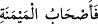
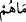
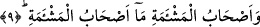
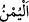

Bu âyet-i kerîmede sözü edilen üç sınıf arasında bir ayırım yapılmaktadır. Birinci
âyetteki
(fe eshabü’l-meymeneti) ifâdesi mübtedâdır. İkinci cümlede “mâ”
harfi istifham için olmak üzere ikinci mübteda, takib eden kelime de onun haberi olup
burası cümle hâlinde birinci mübtedanın haberidir. Aslında “mâ” ile başlayan ikinci
cümle
(mâ hum) yâni “onların halleri ve nitelikleri nedir?” anlamındadır. Maksad,
işitenleri iki guruptan birinin bulunduğu yücelikten, diğerinin içinde bulunduğu feci
durumdan dolayı hayrete düşürmektir. Sanki denilmiş oluyor ki, “sen onların hâlini, ne
durumda olduklarını bilmiyorsun. Öyleyse öğren de, bundan dolayı hayret et.
Sağdakiler son derece iyi durumdadırlar. Sağdakiler yüce yerde olanlardır.
9. Soldakiler, ne bahtsızdırlar onlar!
Soldakiler de en kötü durumdadırlar. Soldakiler ise kötü yerde olanlardır.
Bu ifâdeler, arapların sağ tarafta bereket ve uğur olduğuna inanmalarından, sol tarafı
da uğursuz saymalarından alınmıştır. Nitekim, birinin nazarınızda yüksek değerde
olduğunu ifâde için “o benim sağımdadır”, bir başkasının nezdinizde değerinin düşük
olduğunu ifâde için de “o benim solumdadır” denilmesi gibi. Böylece, bir kimsenin sağ
tarafta olduğunu söylemek onun değerinin yüksek olduğu, birinin sol tarafta olduğunu
söylemek de onun değerinin düşük olduğu, değersiz bulunduğu anlamına gelir.
Yahut, sağdakiler ve soldakiler kavramı şu anlama gelir: Amel defteri sağından
verilenler sağındakiler, amel defterleri solundan verilenler de soldakiler demektir. Ya
da, kıyâmet günü Arş’ın sağında bulunup cennetin yolunu tutacak olanlar sağdakiler,
Arş’ın solunda olup cehenneme sürüklenecek olanlar soldakiler demektir. Bir de,
sağdakiler bereket sahibi olanlar, soldakiler ise uğursuz kimselerdir. Zira mutlu olanlar
Allah’a itâat edenlerdir. Kendilerine böylece bereket getirirler. Günahkar bedbahtlar
ise Allah’a isyanları sebebiyle kendilerine uğursuzluk getirenlerdir. Ayrıca, sağcılar
mîsak gününde Âdem (a.s)’ın sağında olanlardır ki, haklarında Allah “işte bunlar
cennetliktirler ama ben aldırmam”; solcular da Âdem (a.s)’ın solunda olup, haklarında
Allah Teâlâ’nın, “işte bunlar da cehennem ehlindendirler ama, ben önemsemem”
buyurduğu kimselerdir.
Kamus’ta denilmiştir ki:
(yümn), meymenet gibi bereket demektir. Çoğulu
“meyâmîn” ve “eyâmin”dir. Sağ taraf anlamındaki “yemîn”, sol taraf mânâsındaki
“yesâr”ın zıddıdır. Çoğulu “eymün”, “eymân”, “eyâmin” ve “eyâminîn” şekillerinde
gelir. Bereket ve kuvvet demektir. “Şuûm” uğursuzluk anlamına olup, bereket mânâsına
olan yümn kelimesinin zıddı olarak kullanılır. Nitekim, “meş’emet” de “meymenet”in
zıddıdır.